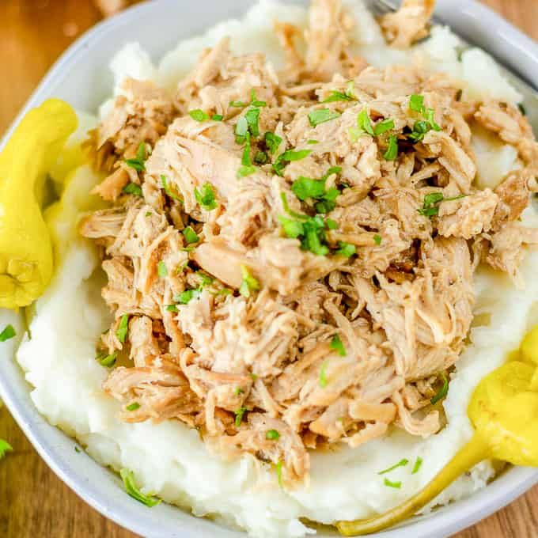

Mississippi Chicken

Description
Mississippi chicken is simple to make with just four ingredients for juicy, tangy shredded chicken that's delicious in buns or served over mashed potatoes or rice. You can make this in a slow cooker if you prefer.
Ingredients
- 2 pounds skinless, boneless chicken breasts
- 1 (1 ounce) package dry ranch dressing mix (such as Hidden Valley Ranch)
- 1 cup sliced and drained pepperoncini peppers
- 1/4 cup pepper juice (from jar of pepperoncini peppers)
- 4 tablespoons unsalted butter, sliced
- 1/2 cup water
Steps
- Gather ingredients. Preheat the oven to 350 degrees F (175 degrees C).
- Season chicken with ranch seasoning mix; place in bottom of a medium Dutch oven.
- Add pepperoncini peppers and 1/4 cup reserved pepper juice; top with sliced butter and pour in 1/2 cup water. Cover with a tight fitting lid, and bake in preheated oven until chicken is fork tender, 1 hour to 1 hour 15 minutes. An instant-read thermometer inserted into the center should read 165 degrees F (74 degrees C).
- Let stand 5 minutes. Shred chicken using two forks.
Slow Cooker Version
Season chicken with ranch seasoning mix and place in the bottom of 6-qt. slow cooker. Add pepperoncini peppers and 1/4 cup reserved pepper juice; top with butter and pour in 1/2 cup of water. Cover, and cook until chicken is fork-tender on LOW for 6 hours or on HIGH for 4 hours. An instant-read thermometer inserted into the center should read 165 degrees F (74 degrees C). Let stand 5 minutes. Shred chicken using two forks.